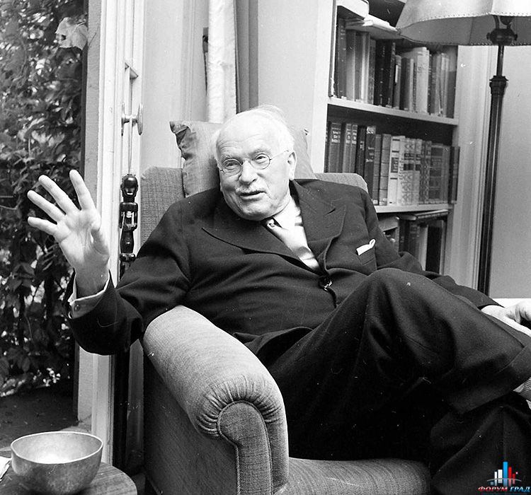

Томас Гоббс
5 апреля 1588 г. - 4 декабря 1679 г.

Детство и юность
Томас Гоббс появился на свет 5 апреля 1588 года в юго-восточном графстве Англии, в семье приходского священника. С 8 лет мальчик стал посещать сельскую школу, а затем поступил в частное заведение. Директор, заметив способного ученика, стал давать ему дополнительные задания, и уже в возрасте 14 лет Томас самостоятельно сделал стихотворный перевод древнегреческой трагедии «Медея».
Благодаря протекции директора и финансовой поддержке родного дяди, в 1603 году Томас поступил в Оксфордский университет. В течение 5 лет он изучал физику, схоластическую логику, совершенствовал свои познания в латыни и греческом языке.
Философия Гоббса
Философские взгляды
Томас Гоббс создал первую в Европе философскую теорию механицизма, которая соответствовала уровню развитию естественнонаучного знания той эпохи. Дискутируя с Р. Декартом, мыслитель решительно отвергал бытование обособленной мыслящей субстанции, убедительно доказывая, что мыслящая вещь является сугубо материальной. Т. Гоббс полагал, что геометрия и механика являются универсальными эталонами научного мышления и основой материалистического миропонимания. Философ считал, что Природа является совокупностью протяженных тел, котрые различаются между собой по величине, объему, фигуре, положению и вектору движения. Под движением Гоббс понимал перемещение различных форм материи, то есть трактовал его как явление механистическое. Чувственно-эмоциональные свойства вещей рассматриваются философом не как присущие им внутренние качества, а скорее как некие формы внешнего восприятия их существования. В своем материалистическом учении Т. Гоббс содержательно разграничивал следующие категории: протяженность (объективно присущую телам); пространство как образ, создаваемый разумом («фантазм»); объективно существующее движение тел и время как субъективную форму движения. Мыслитель выделял два ведущих метода научного познания: логическую дедукцию утилитарно-рационалистической «философской механики» и индукцию «эмпирической физики».
О гражданине и обществе
Актуальные тенденции интеллектуального поиска Нового времени получили в концентрированном виде яркое выражение в общественных взглядах Т. Гоббса. Он видел идеальный образец знания в науках, которые более или менее непосредственно связаны с практической стороной общественной жизни. В разгар Английской революции Т. Гоббс сформулировал важнейшую норму о свободном статусе гражданина, ставшую фундаментом передового общественного мировоззрения Нового времени. У Гоббса уже можно увидеть представление о совокупности прав и свобод, признаваемых за гражданином. Теория Т. Гоббса своим богатым идейным содержанием, отразившим искусное осмысление важнейших потребностей общественного развития, сыграла огромную роль в победе буржуазного строя в Англии. Существенное значение в учении Гоббса придается принципиальному противопоставлению естественного состояния состоянию гражданскому. В естественном состоянии нет общей власти, закона и справедливости, нет безопасности, отсутствуют также все формы собственности, идет «война всех против всех». В противоположность природно-чувственному содержанию теории естественного права человеческий дух, по мнению Т. Гоббса, изначально наделен естественными законами как непоколебимыми моральными установками. Здесь наиболее ярко проявилась идеалистическая сущность теории общественного договора с его априорным понятием неизменной человеческой природы. Английский мыслитель уверен, что люди не испытывают удовольствия от жизни в социуме и принудить их к этому способна лишь власть. Т. Гоббс считал, что «необходимо прийти к согласию, которое строится на соглашении и общей власти» [5, с. 59]. Лишь разум может подсказать приемлемые условия для примирения. Эти нормы и являются, по Гоббсу, естественными законами. Согласно мыслителю, естественное право есть свобода всякого человека использовать собственные силы для сохранения жизни, а, следовательно, свобода делать все то, что, по его суждению, является наиболее подходящим для этого [4, с. 89]. Т. Гоббс утверждал, что общественная жизнь никоим образом не совпадает с государственной, а между законом и правом существуют значительные различия, ибо право состоит в свободе делать или не делать что-то определенное, а закон обязывает к тому или другому.
Учение о государстве
Государство Гоббс представлял себе как большой механизм, образовавшийся в результате бурного движения, конкурентной борьбы, противоречий и столкновения человеческих стремлений и страстей. В своем учении он делает попытку препарировать такое сложное целое, как государство, на его отдельные составляющие, а последние объяснить простыми законами природы. Гоббс приходит к мысли о необходимости различать два состояния человеческого общества – естественное и гражданское. Учрежденное по добровольному соглашению государство называется политическим, или основанным на договорном установлении. Что касается понятия «политическое государство», то оно впоследствии получило широкое распространение в просветительской литературе – в трудах Дж. Локка и Ж.Ж. Руссо [9; 10]. Идея договорного происхождения государства явилась существенной предпосылкой в конструировании правовой государственности.
Мыслитель полагал, что «тот, кому вручена верховная власть, не связан ни гражданским законом, ни кем бы то ни было из граждан». Т. Гоббс был убежденным сторонником принципа твердой руки в управлении государством и противником умеренной формы правления, но он уже был идеологом не монархии эпохи феодализма, а буржуазного строя. Его основная идея не монархический принцип как таковой, а неограниченность государственной власти независимо от формы правления. Абсолютную и ничем неограниченную власть мыслитель распространяет не только на поведение индивида, но и на его воззрения – религиозные, этические и политические. Томас Гоббс полагает, что государство должно быть основным посредником в вопросе о толковании Священного Писания, придавая ему первостепенное идеологическое значение. Английский мыслитель требовал «правильного» толкования Библии и религиозной догматики исключительно в интересах государственной власти, жестко пресекая любые поводы для несогласия. Церковную власть Гоббс также подчиняет светской власти. Даже если распоряжения власти противоречат религиозным догмам, верующий должен беспрекословно повиноваться законам государства. Философ полагал, что любое «учение, противодействующее миру, не может в большей мере быть истинным, чем мир и согласие – направленными против естественного закона».
В своих работах – «О гражданине», «Левиафан, или Материя, форма и власть государства церковного и гражданского» и «Бегемот, или Долгий парламент» мыслитель излагает концепцию построения образцового государства. Трактат «Левиафан», содержавший полное и систематическое изложение социально-политической теории Гоббса и ее философское обоснование, был задуман как апологетика государственной власти. Этому полностью отвечало уподобление государства Левиафану – библейскому чудовищу [6, с. 143]. Несмотря на такую достаточно традиционную для того времени интерпретацию государственной власти, было сделано главное – появилась идея о договорной природе государства. Аналогия государства с Левиафаном стала со временем популярной и порою занимала место определения государственной власти. В «Бегемоте» Гоббс обрушивается на парламентский строй, политические партии, которые он отождествляет с опасными сектами и требует сократить парламентские сессии до минимума необходимого для одобрения законов. Он обвиняет членов парламента в «унижении» (то есть ограничении) государственной власти, показывает их смутьянами и политиканами.
Гоббс выступал как последовательный противник любых форм гражданского неповиновения, революций и гражданских войн. Мыслитель был против разделения властей, конкурентной политической борьбы, партий, постоянного парламента, считая само его существование покушением на полноту государственной власти. Вместе с тем, Т. Гоббс положил начало созданию продуктивной модели правового государства, впоследствии развитой Дж. Локком и другими европейскими просветителями.Законы семейного воспитания
В отличие от предшествующей философской и педагогической мысли (как западной, так и восточной) Т. Гоббс никогда не отождествлял семью с обществом и государством, и не распространял законы семьи на социум и на политическую систему. Например, если у Конфуция: император – отец, все подданные – дети, а государство – семья, то у Гоббса семья это слепок политической организации – своеобразное микрогосударство со всеми его управленческими нормами. Таким образом, для Т. Гоббса семья представляет собой систему господства и подчинения в миниатюре. В семье за влияние на ребенка борются две конкурирующих силы: отец и мать. Так, появившийся на свет младенец немедленно попадает «под власть матери прежде, чем под власть кого бы то ни было другого, так что она по праву может воспитывать его и распоряжаться им по своему усмотрению» [3, с. 129]. Если отец является не только формальным, но и фактическим главой семейства, то власть над ребенком и ответственность за него (до его взросления) находится в его руках. Отец и мать воспитывают отпрыска, с детства формируют его привычки, закладывают определенные поведенческие и нравственные нормы. Если для реалий естественного состояния власть матери над ребенком представляется Гоббсу допустимой (поскольку идет конкурентная борьба между мужем и женой), то для государственного (гражданского) состояния такое явление немыслимо. Так как, после заключения общественного договора отцы становятся основателями нового строя, то их власть распространяется и на семью. В этих условиях дети «подчиняются власти отца, потому что во всех государствах, установленных отцами, а не матерями семейства, домашняя власть принадлежит мужу»
Значение для науки
Историческое значение философского учения Томаса Гоббса велико. Он был одним из родоначальников европейской науки Нового времени. Затронутые мыслителем важнейшие философские, общественные и политические проблемы получили свое дальнейшее развитие в трудах философов эпохи Просвещения. В его учении коренились важнейшие элементы материалистического понимания и научной трактовки социальных явлений. Т. Гоббс сыграл значительную роль в становлении правовой государственности, сформулировал понятия верховенства права и государственного суверенитета, оказав тем самым существенное воздействие на последующую политико-правовую традицию. Также ученый внес весомый вклад в развитие этики, истории религий, эмпирической и ассоциативной психологии.
Личная жизнь
При изучении краткой биографии Томаса Гоббса стоит отметить, что ученый так и не устроил личную жизнь: у него не было ни жены, ни детей. Все свои силы он посвятил науке.
Смерть
В 1666 году Палата общин представила законопроект против атеизма и профанации, и научные труды Гоббса попали под статью о ереси. Гоббс лишился права публиковать свои работы в Англии. Опасаясь преследований, он сжег все компрометирующие бумаги.
Последним произведением ученого стала автобиография, написанная в стихах, и английский перевод древнегреческой «Одиссеи». Скончался Томас Гоббс 4 декабря 1679 года, в возрасте 91 года. Причиной смерти стал паралитический инсульт.
Основные труды
Выдающийся ученый оставил после себя значительное научное наследие. Среди важнейших сочинений Т. Гоббса следует отметить: «Философские основания учения о гражданине» (1642) г., «Трактат о человеческой природе» (1650 г.), «Левиафан, или Материя, форма и власть государства церковного и гражданского» (1651 г.), «Бегемот, или Долгий парламент» (1668 г.).